laptop sticker
I've always been fond of the russian painter Kasmir Malevich. I thought that re-creating his most famous work 'Black Square' (it's a black square) might be a bit of a cop out, and I was interested to try and work with multiple colours.
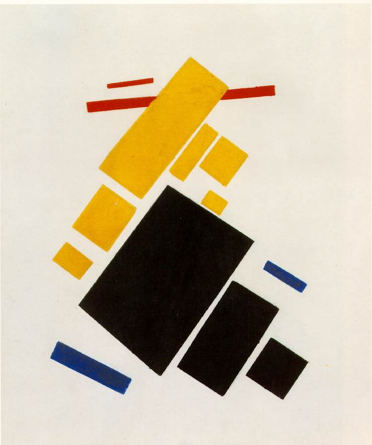
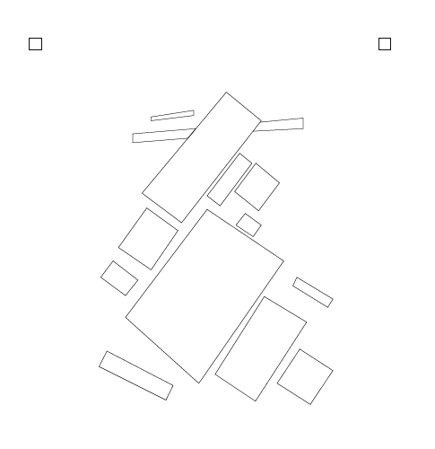
Here I used adobe illustrator to trace the painting 'Aeroplane Flying', shown above in the original and traced form, with different colours separated into layers. In order to cut the layers separately, I used CorelDraw, which allows different layers to be sent to the printer at different times, instead of using 4 separate files.
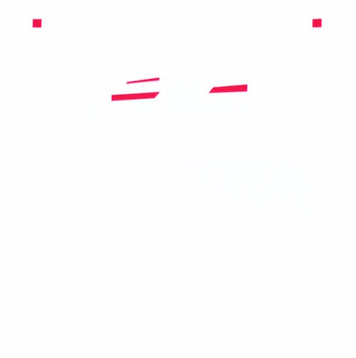
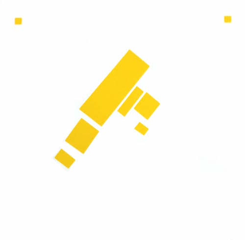
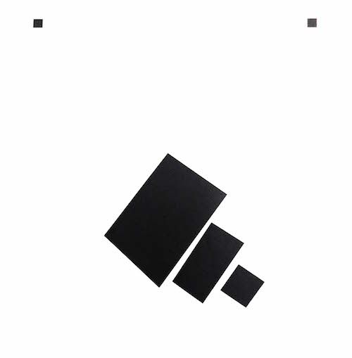
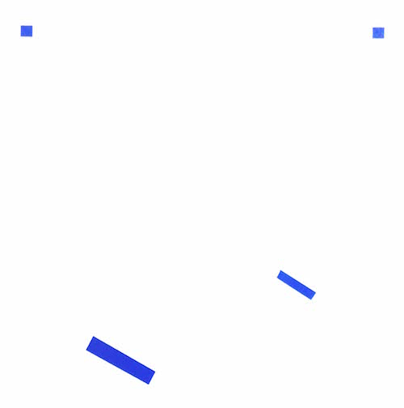
The two squares in the corner of the piece are registration marks: these allow the different colours to be matched up, and ensure the final sticker is well aligned. The separated layers are pictured above. Assembling the pieces, I used a strip of masking tape to align the registration marks, and make sure they could be removed after they were stuck down.
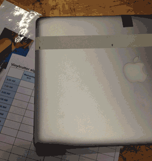
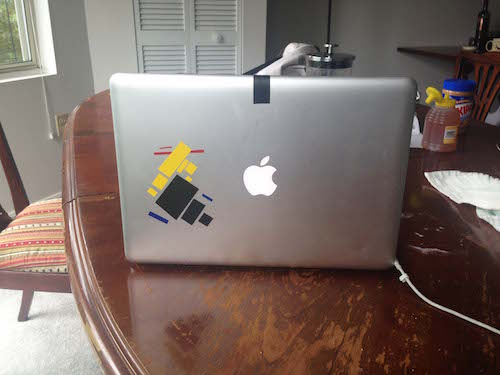
press kit city
For the laser cutter task, I chose to look at making a build-your-own-city kit. The idea of the kit is to be modular and adaptible, with each feature fitting onto a standardised, tesselating base tile. As any feature constructed would need to fit into the tile, there are a number of possible slots to incorporate different kinds of building (flats, houses, parks etc).
I chose to do the designs in Fusion 360 -- I'd found this the most usble of the CAD packages I'd tried in part 1. Defined the card thickness as a parameter characterising the laser kerf
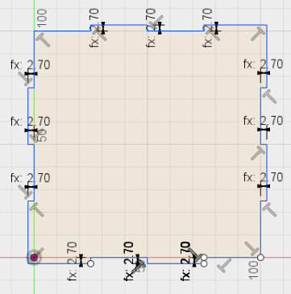
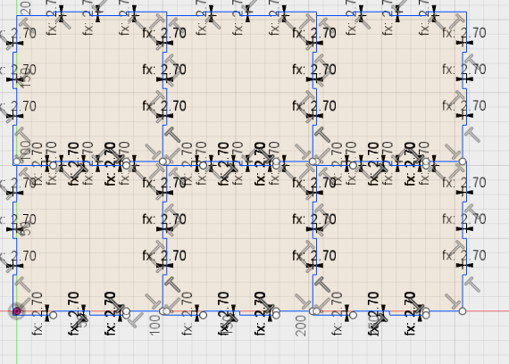
Once base tile designed, on to buildings
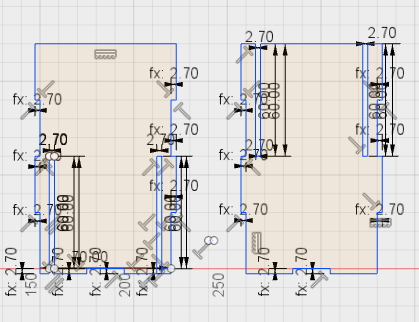